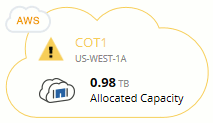

Notas de la versión
Notas de la versión
Licencia
 Sugerir cambios
Sugerir cambios
Cada sistema BYOL de Cloud Volumes ONTAP debe tener una licencia instalada con una suscripción activa. Si no se instala una licencia activa, el sistema Cloud Volumes ONTAP se apaga después de 30 días. Cloud Manager simplifica el proceso al gestionar las licencias para usted y notificar antes de que caduquen.
Gestión de licencias para un nuevo sistema
Cuando crea un sistema BYOL, Cloud Manager le solicita una cuenta del sitio de soporte de NetApp. Cloud Manager utiliza la cuenta para descargar el archivo de licencia de NetApp e instalarlo en el sistema Cloud Volumes ONTAP.
Si Cloud Manager no puede acceder al archivo de licencia a través de una conexión a Internet segura, puede obtener el archivo usted mismo y, a continuación, cargarlo manualmente en Cloud Manager. Para ver instrucciones, consulte "Instalación de archivos de licencia en sistemas BYOL de Cloud Volumes ONTAP".
Caducidad de la licencia
Cloud Manager le advierte de 30 días antes de que caduque una licencia para volver a expirar la licencia. La siguiente imagen muestra una advertencia de caducidad de 30 días:

Puede seleccionar el entorno de trabajo para revisar el mensaje.
Si no renueva la licencia a tiempo, el sistema Cloud Volumes ONTAP se apaga automáticamente. Si lo reinicia, se apaga de nuevo.

|
Cloud Volumes ONTAP también es posible notificar por correo electrónico, un host de capturas de SNMP o un servidor de syslog mediante las notificaciones de eventos de EMS (Event Management System). Para ver instrucciones, consulte "Guía exprés de configuración de EMS de ONTAP 9". |
Renovación de la licencia
Cuando renueve una suscripción de BYOL con un representante de NetApp, Cloud Manager obtiene automáticamente la nueva licencia de NetApp y la instala en el sistema Cloud Volumes ONTAP.
Si Cloud Manager no puede acceder al archivo de licencia a través de una conexión a Internet segura, puede obtener el archivo usted mismo y, a continuación, cargarlo manualmente en Cloud Manager. Para ver instrucciones, consulte "Instalación de archivos de licencia en sistemas BYOL de Cloud Volumes ONTAP".